In this part, I took a 3D scan of my purse to build a NERF reconstruction of it in later parts. I printed out an ArUco markers grid with unique identifiers to calibrate my camera's intrinsic parameters. Then, I took pictures of the ArUco tags and used the cv2.calibrateCamera() function to estimate the camera matrix and distortion coefficients.
Calibration Pipeline:
Detect ArUco markers in each calibration image using cv2.aruco.detectMarkers()
Extract 2D corner coordinates of detected markers
Define corresponding 3D world coordinates based on known marker positions
Estimate camera intrinsics (focal length, principal point) and distortion coefficients using cv2.calibrateCamera()
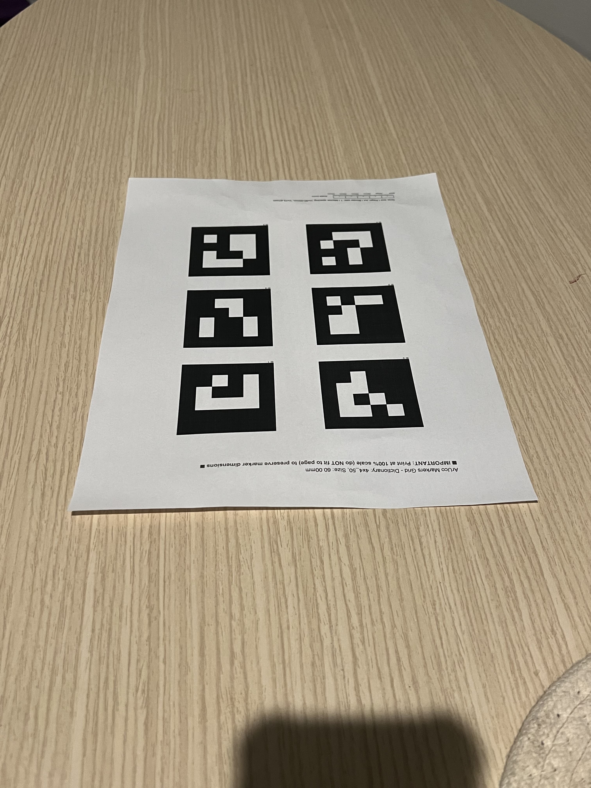
Calibration image with detected ArUco markers (view 1)
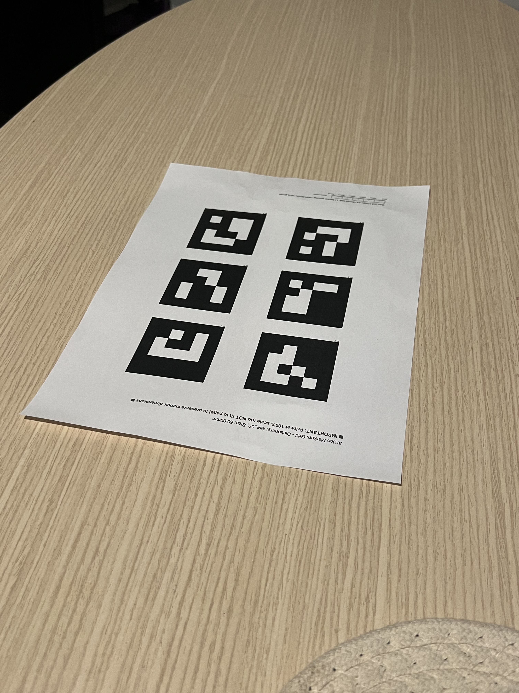
Calibration image with detected ArUco markers (view 2)
0.2 Object Scanning and Pose Estimation
After calibration, I captured images of my purse placed next to a single ArUco marker. For each image, I detected the marker and used the Perspective-n-Point (PnP) algorithm (cv2.solvePnP()) to estimate the camera's extrinsic parameters (rotation and translation) relative to the marker's coordinate system.
The extrinsic matrix transforms points from world coordinates to camera coordinates:
where R is the 3×3 rotation matrix and t is the 3×1 translation vector.
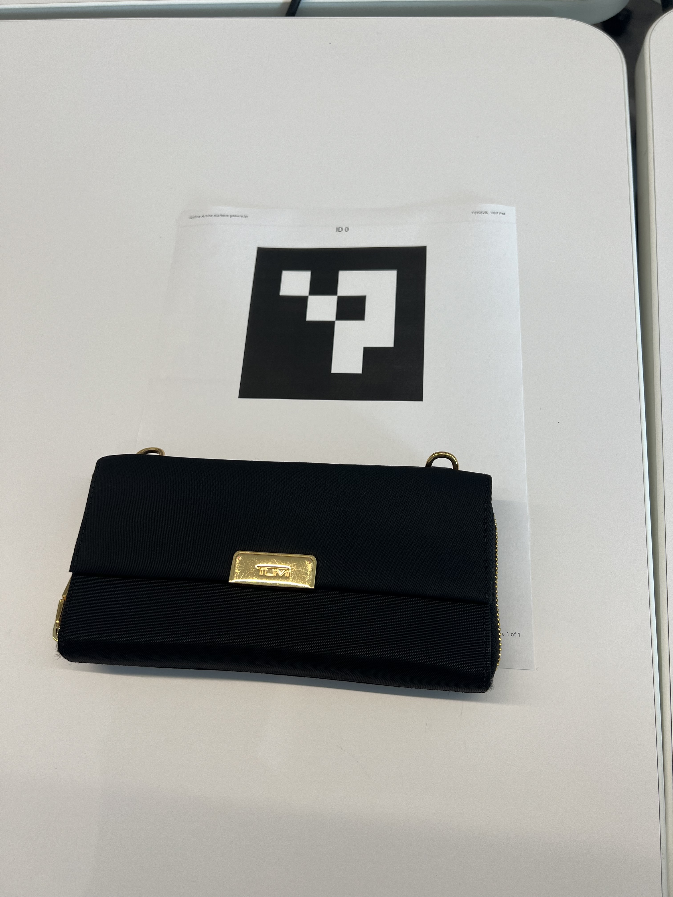
View 1
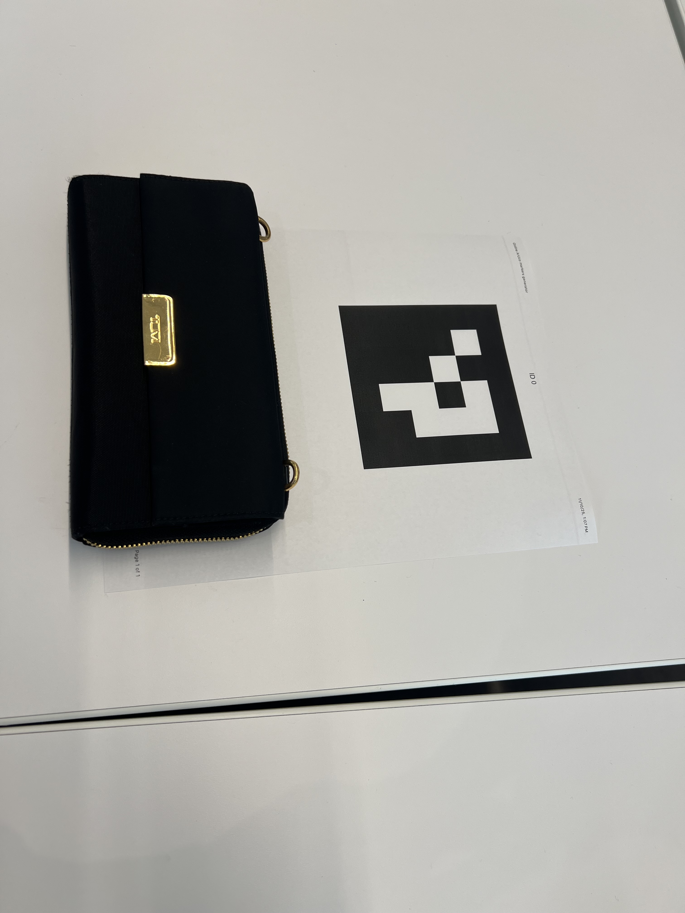
View 2
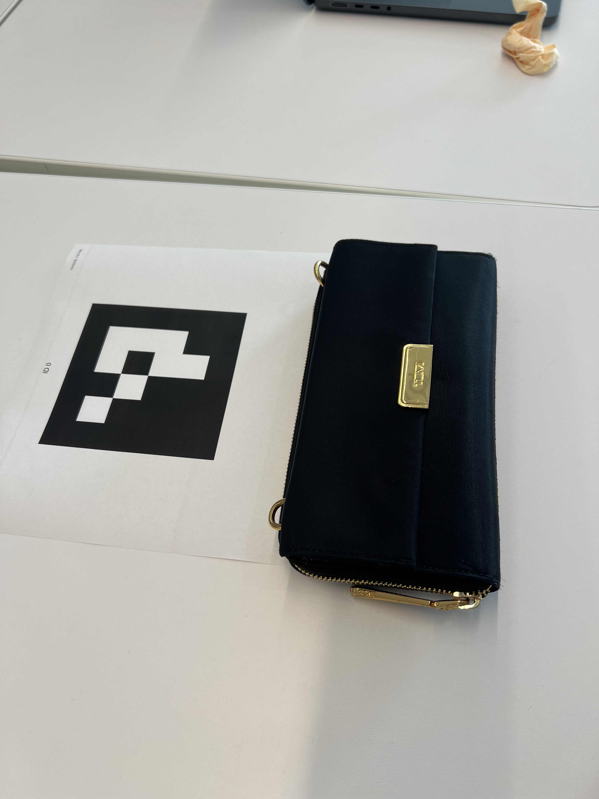
View 3
0.3 Camera Pose Visualization
To verify the pose estimation, I visualized the estimated camera positions and orientations in 3D space using the Viser library. Each camera is represented as a frustum showing its position, orientation, and captured image. This visualization helps identify any outliers or errors in the pose estimation process.
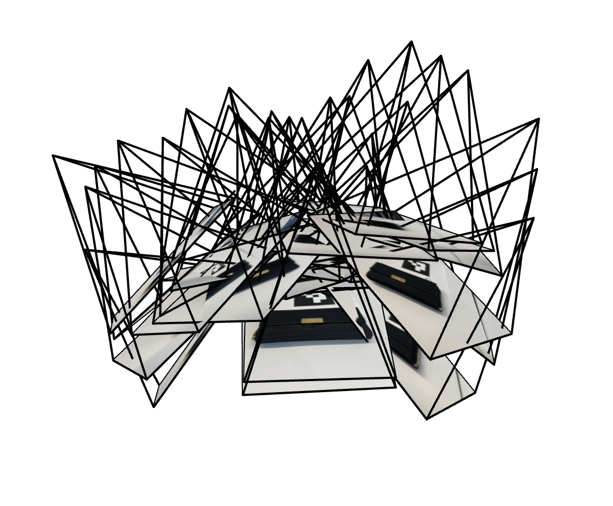
3D visualization of camera poses (perspective 1)
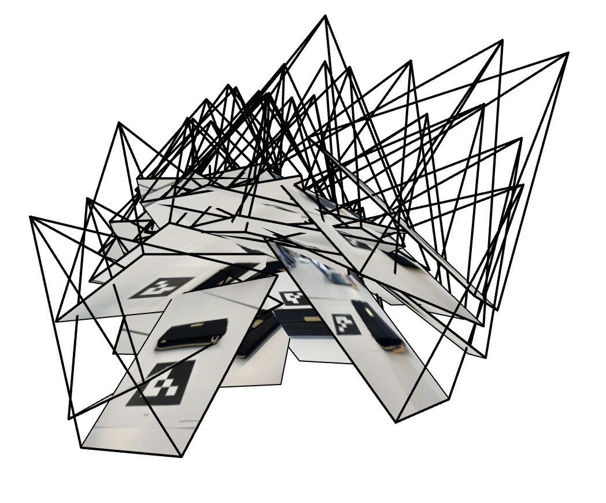
3D visualization of camera poses (perspective 2)
0.4 Dataset Preparation
Then, I undistorted all the captured images using cv2.undistort() and packaged the data for NeRF training.
images_train: (N_train, H, W, 3) - Training images (0-255 range)
c2ws_train: (N_train, 4, 4) - Camera-to-world matrices for training
images_val: (N_val, H, W, 3) - Validation images
c2ws_val: (N_val, 4, 4) - Camera-to-world matrices for validation
c2ws_test: (N_test, 4, 4) - Camera-to-world matrices for novel views
focal: float - Camera focal length
Part 1: Fitting a 2D Neural Field
A 2D neural field is a function F: {u, v} → {r, g, b} that maps pixel coordinates to RGB color values. I trained a Multi-Layer Perceptron (MLP) to do this.
Network Architecture and Positional Encoding
First thing was positional encoding which maps input coordinates to higher-dimensional space before feeding them to the network. This allows the network to capture high-frequency details. Here is mine:
Then, the MLP architecture consists of multiple fully-connected layers with ReLU activations, taking the positionally-encoded coordinates as input and outputting RGB values through a sigmoid activation.
Training Configuration:
Optimizer: Adam with learning rate 1e-2
Loss Function: Mean Squared Error (MSE)
Batch Size: 10,000 random pixels per iteration
Training Steps: 3,000 iterations
Metric: Peak Signal-to-Noise Ratio (PSNR) = 10 × log₁₀(1/MSE)
In addition, here is the model architecture I used. I normalized the coordinates based on the image height/width and the pixel colors by dividing by 255. Then, I used L=10 as the max frequency for the positional encoding (maps 2 dimensional coordinate to 42 dimension). For the hidden dimensions, the input was a 42 dimension vector (since L = 10) to 256 dimension hidden vector in a Linear layer. This is followed by a ReLU activation. Then, two more Linear layers with 256 -> 256 hidden dimensional vectors immediately followed by ReLU activations. And finally, the last Linear layer takes in the 256 dimensions and outputs 3 dimensions (for RGB) followed by a Sigmoid activation.
Hyperparameter Analysis
I experimented with different network widths (hidden layer dimensions) and maximum frequencies (L) for positional encoding to understand their impact on reconstruction quality.
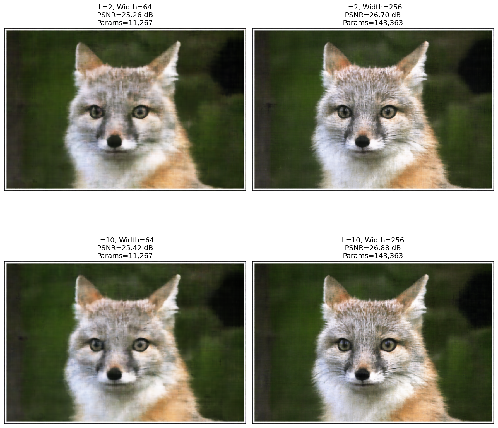
Keeping the network widths at 64 resulted in similar PSNR and image results regardless of the max frequency. Keeping the network widths at 256 also resulted in similar PSNR values, but the details with a higher max frequency were more visible as you can see the whiskers on the fox clearly.
Training Progress
The following sequence shows the improvement over training iterations. Initially, the network learns coarse features and gradually refines details as training progresses.
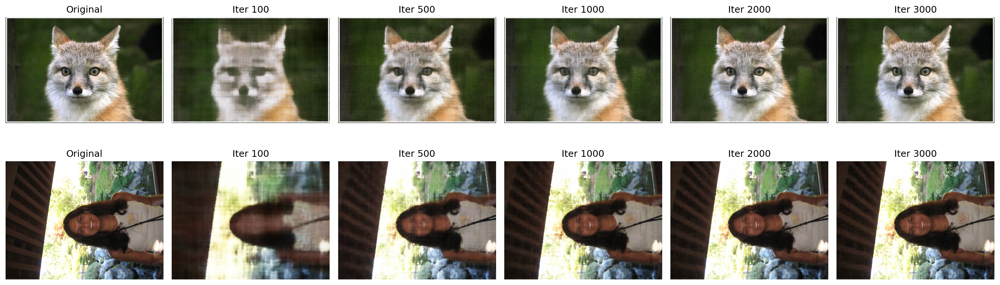
Here is the training progression for the fox and my face.
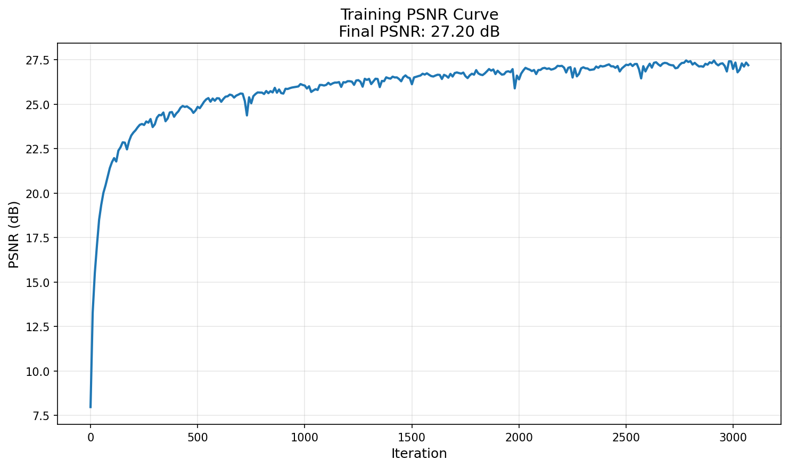
Here is the PSNR curve for training on the image of my face.
Part 2: Neural Radiance Fields (NeRF) for 3D Scenes
Here, I worked with the LEGO scene from the original NeRF paper, downsampled to 200×200 resolution. The dataset consists of 100 training views, 10 validation views, and 60 test camera poses. The cameras are positioned in a spherical arrangement around the object.
Coordinate System Transformations
1. World to Camera (transform function)
The camera-to-world (c2w) transformation matrix converts points from camera space to world space. I wrote a function that does the following:
X_c = [R | t] × X_w
where X_c is in camera coordinates and X_w is in world coordinates
2. Pixel to Camera (pixel_to_camera function)
Given a pixel location (u, v) and a depth s, I can compute the corresponding 3D point in camera coordinates using the camera intrinsic matrix K by multiplying the depth by K_inverse by the pixel location:
K = [[f_x, 0, o_x],
[0, f_y, o_y],
[0, 0, 1]]
X_c = K-1 × [u, v, 1]T × s
3. Pixel to Ray (pixel_to_ray function)
For each pixel, I compute a ray with origin and direction in world space. The ray origin is the camera center, and the direction is computed by transforming a point at depth s=1 to world coordinates (using the above two functions) and normalizing. All three of the above functions were written for batched coordinates as well to speed up computation later on.
Ray origin: r_o = -R-1t
Ray direction: r_d = normalize(X_w - r_o)
where X_w is the world coordinate of the pixel at depth s=1
Ray Sampling and Point Sampling
During training, I randomly sample rays from the training images. For each ray, I uniformly sample points along the ray between near and far bounds (2.0 and 6.0 for the Lego scene). To prevent overfitting, I add random perturbations to the sample locations during training so there isn't a fixed set of 3D points.
Sampling Strategy:
Sample N random pixels from training images
Convert pixels to rays using camera parameters (pixel_to_ray function)
For each ray, sample K points: t = linspace(near, far, K)
Add random jitter: t = t + random(t.shape) × Δt (training only)
Compute 3D positions: X = r_o + r_d × t
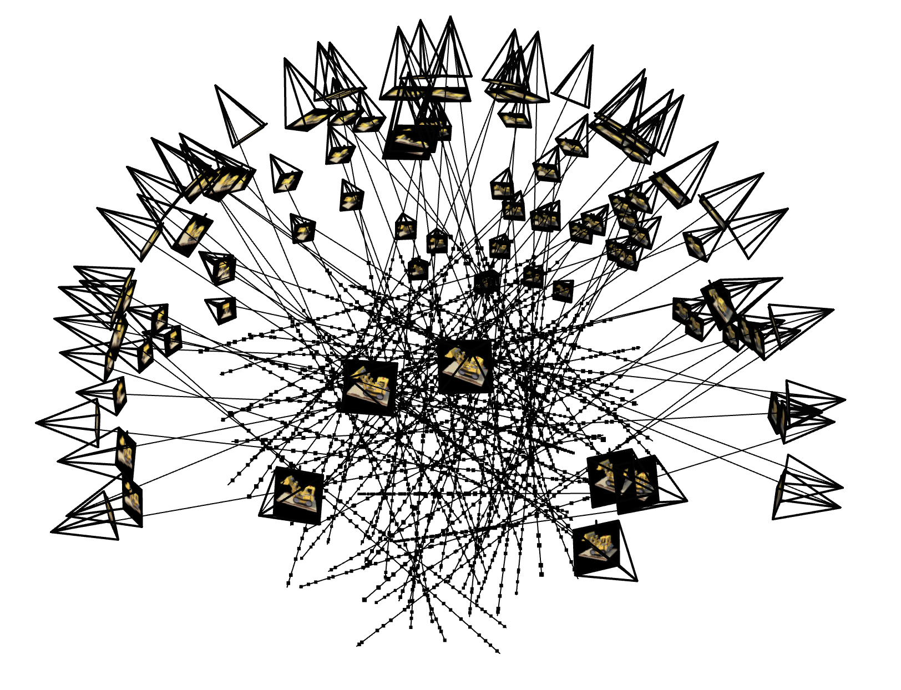
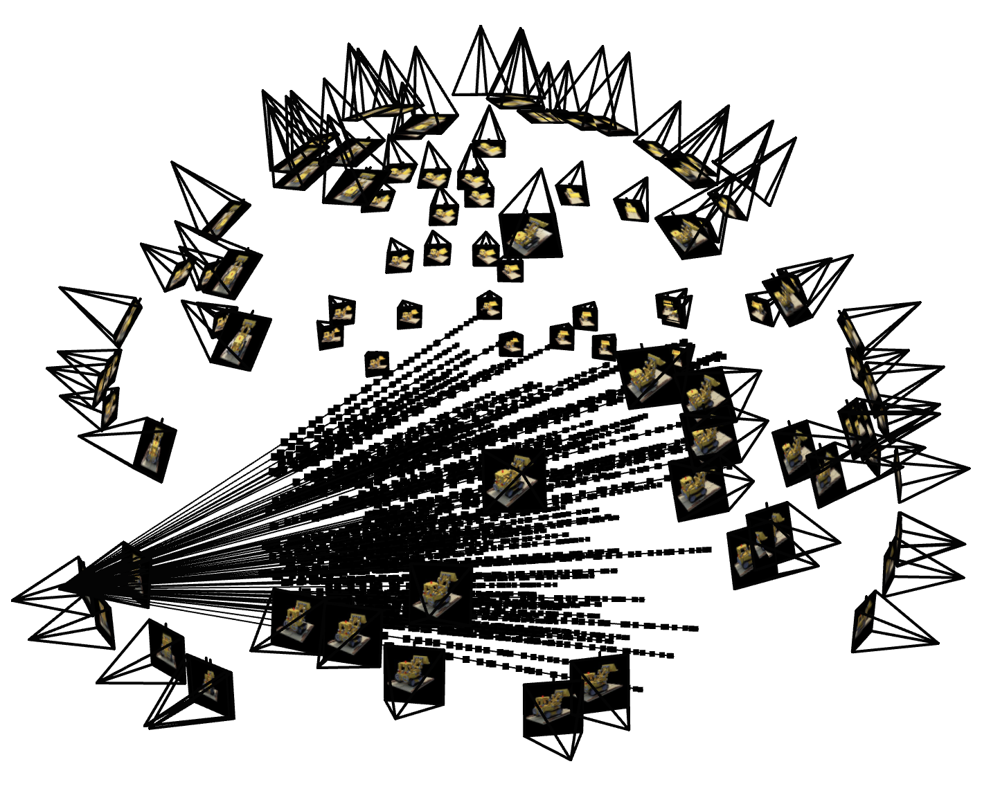
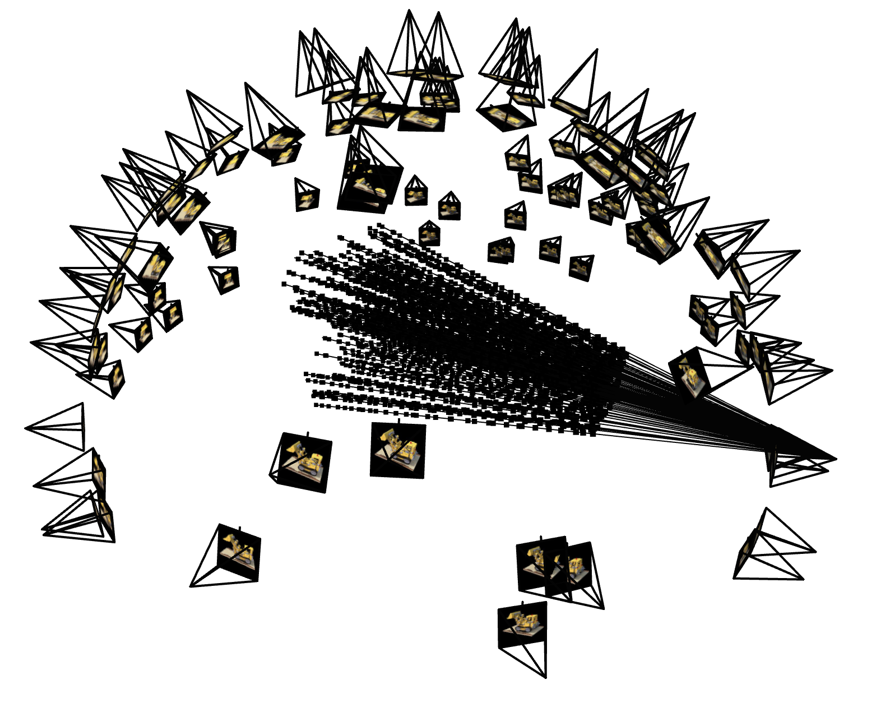
Visualization of sampled rays and points along rays in 3D space using the sample code provided.
Network Architecture for 3D NeRF
The 3D NeRF network extends our 2D neural field with two key modifications:
Input: 3D position (x, y, z) with positional encoding and ray direction
Output: RGB color (r, g, b) and volume density σ
Architecture: Deeper network with skip connections following the original NeRF design
Network Structure:
- Input layer: PE(x, y, z) → 3 × (2L + 1) dimensions
- Hidden layers: 8 layers of 256 neurons with ReLU
- Skip connection: Concatenate coordinate input to layer 4
- Skip connection: Concatenate ray input to layer 9 in the colors
- Positional Encoding: The ray direction is encoded with L=4 and the 3D points are encoded with L=10
- Density head: σ = ReLU(Linear(256 → 1))
- Color head: rgb = Sigmoid(Linear(256 → 3))
Volume Rendering
Differentiable volume rendering aggregates color and density along each ray to produce the final pixel color. The continuous volume rendering equation is:
C(r) = ∫t_nt_f T(t) σ(r(t)) c(r(t), d) dt
where T(t) = exp(-∫t_nt σ(r(s)) ds)
In practice, we use the discrete approximation:
Ĉ(r) = Σi=1N T_i (1 - exp(-σ_i δ_i)) c_i
where T_i = exp(-Σj=1i-1 σ_j δ_j)
T_i: transmittance (probability ray reaches point i)
(1 - exp(-σ_i δ_i)): opacity at point i
δ_i: distance between samples
The volume rendering equation accumulates color contributions along the ray, weighted by both the density at each point and the probability that the ray hasn't been blocked earlier.
Training Configuration
NeRF Training Parameters:
Optimizer: Adam with learning rate 5e-4
Loss Function: MSE between rendered and ground truth RGB
Batch Size: 10,000 rays per iteration
Samples per Ray: 64 points
Training Steps: 1,000 iterations
Positional Encoding: L=10 for position, L=4 for direction
Note: I changed the last activation for the density head from relu to softmax because while training my model, I kept hitting a local optimum at around 11 PSNR. I debugged my model training and saw that the alpha values were way too small which caused this issue, so changing the architecture to incorporate softmax fixed this.
Training Progress: Lego Scene
The following images show the evolution of a novel view rendering during training. The network progressively learns the 3D geometry and appearance of the scene.
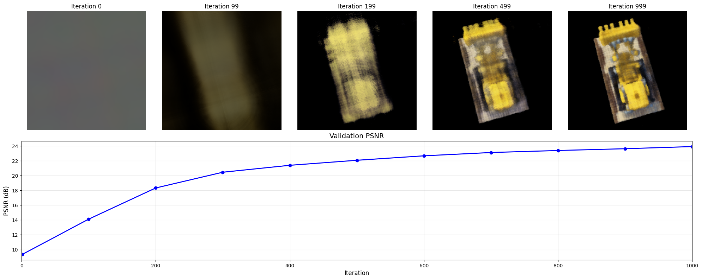
1000 iterations PSNR: 23.91 dB
Novel View Synthesis
After training, I rendered views by evaluating the network at test camera poses. The test cameras follow a circular trajectory around the object.
360° rotation around the Lego bulldozer
Part 2.6: NeRF on Custom Object
Training Adaptations
Training NeRF on real-world captured data required several adjustments from the synthetic Lego dataset:
Implementation Modifications:
Near/Far Bounds: I adjusted based on the object scale and camera distance (near=0.011, far=0.436)
Learning Rate: I changed it to 1e-3 because my PSNR was plateuing after a couple hundred iterations and entering a local maximum. This helped with better exploration and convergence. I also added a scheduler to decay the learning rate over time which helped with convergence as well.
Model Architecture: I changed the model architecture by adding bias to the density head. In addition, I kept the sofmax activation on the density head instead of ReLU because my alpha values were too low.
Iterations: I ran for 10000 iterations to see the model performance for longer.
Training Progress
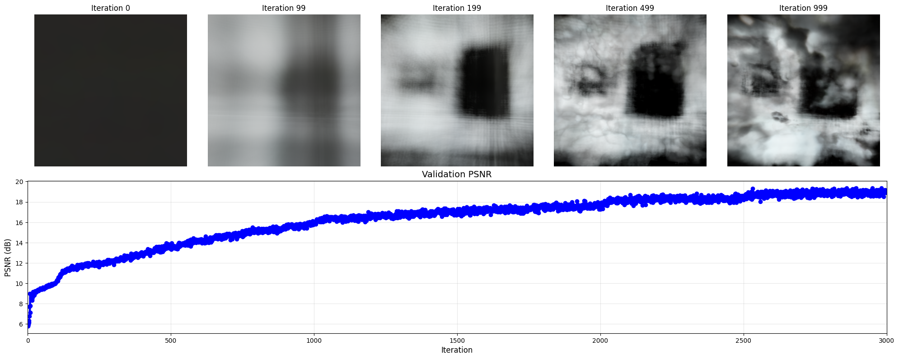
I achieved a PSNR of 19.70 dB after 10000 iterations on my training data.